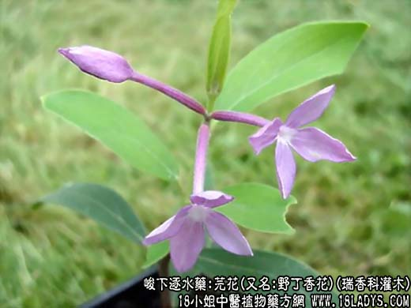

【中药概述】
芫花(又名:野丁香花)为瑞香科灌木植物芫花的花蕾。辛、苦，温；有毒。归肺、肾、大肠经。
1．泻水逐饮：用于胸胁水饮停蓄，喘咳胀满，痛引胸胁，心下痞硬，及腹水肿胀二便不利等。常与大戟，甘遂配合应用。
2．祛痰止咳：用于咳嗽痰喘之证，以单味芫花水煎服，入白糖食之。
3．杀虫疗疮：外用治疥癣秃疮、冻疮等。可配猪油拌和，外涂治头癣。
【药效鉴别】
本品与大戟、甘遂相类似，更善泻身半以上部位的水饮。芫花本利水，非醋不能通。
【药理作用】
芫花素能刺激肠壁，引起剧烈的水泻和腹痛。
【化学成分】
含黄酮甙，甙原为芫花素；亦含羟基芫花素、芹菜素、谷固醇、苯甲酸及刺激性油状物。
【用量用法】
0.5——3g，入汤散剂。外用适量。醋制以减轻其毒性。
【使用注意】
本品反甘草（藻戟芫遂俱战草）。